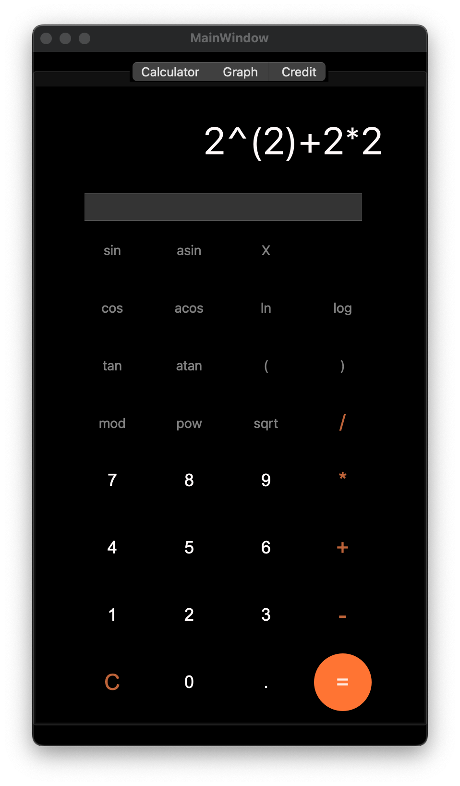
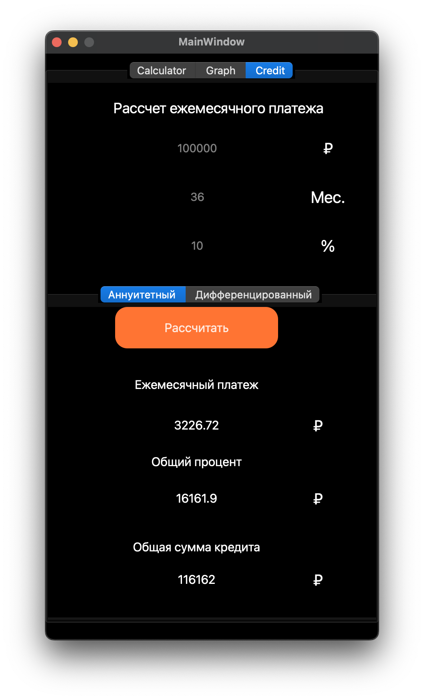
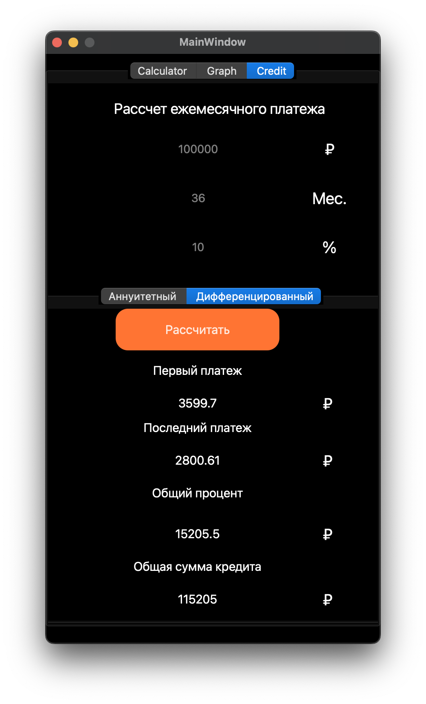
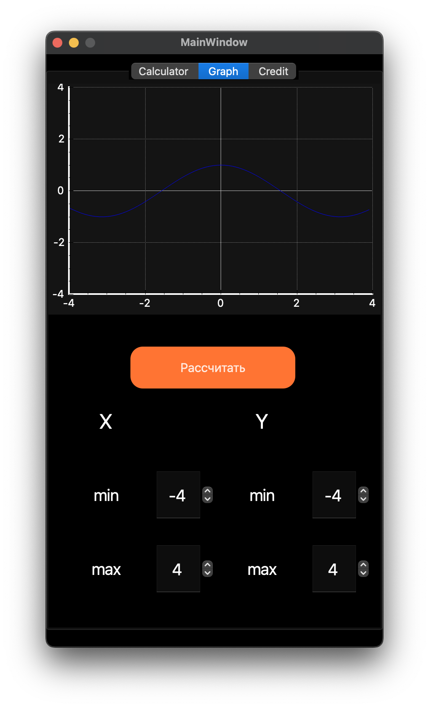

<p align="left"><strong><em>kikuokam</em></strong></p> # <p align="center">SmartCalc</p> <p style="text-align: justify;">Устали от умственных вычислений? Путаетесь в своих расчетах? Сложные инженерные калькуляторы кажутся непонятными?</p> <p style="text-align: justify;">У нас есть решение! Неповторимый и оригинальный калькулятор **SmartCalc pro** от пира **_kikuokam_**.</p> <p style="text-align: justify;">SmartCalc - это усовершенствованная версия обычного калькулятора, обладающая следующими возможностями:</p> <blockquote> Основные арифметические операции (сложение, вычитание, умножение, деление). </blockquote> <blockquote> Вычисление арифметических выражений с учетом приоритетов и использование различных математических функций (например, синус, косинус, логарифм и другие). </blockquote> <blockquote> Работа с переменной x и построение графика соответствующей функции. </blockquote> <blockquote> Кредитный калькулятор для дополнительного функционала. </blockquote>  <blockquote> Калькулятор принимает как целые, так и вещественные числа, записанные через точку. </blockquote> <blockquote> Расчет выполняется после ввода выражения и нажатия на символ =. </blockquote> <blockquote> Возможность ввода до 255 символов. </blockquote> <blockquote> Точность вывода дробной части - 7 знаков после запятой. </blockquote> <blockquote> Отдельное окно для ввода значения переменной x. </blockquote> ### <p align="center">Кредитный калькулятор</p> <p style="text-align: justify;">Кредитный калькулятор помогает оценить параметры кредита, такие как ежемесячные платежи, общую сумму выплат и общие затраты по кредиту.</p> <p style="text-align: justify;">Необходимо указать сумму кредита, процентную ставку, срок кредита. После ввода этих данных, калькулятор рассчитывает ежемесячные платежи, общую сумму выплат и начисленные проценты.</p> <p style="text-align: justify;">Также можно выбрать тип платежей: аннуитетный или дифференцированный.</p> > Аннуитетный платеж - вариант ежемесячного платежа по кредиту, когда размер ежемесячного платежа остается постоянным на протяжении всего периода кредитования.  > Дифференцированный платеж - вариант ежемесячного платежа по кредиту, когда размер ежемесячного платежа по погашению кредита постепенно уменьшается к концу периода кредитования.  ### <p align="center">Построение графика функции</p> <p style="text-align: justify;">Вкладка Graph позволяет визуализировать график функции.</p> <p style="text-align: justify;">Для построения графика нужно ввести выражение и нажать на символ '=' . </p> <p style="text-align: justify;">Во вкладке Graph пользователю будет предложено построить график для введенного выражения.</p> <div style="text-align: center;">  <p style="margin-top: 1px;">*Построение графика при cos(x)*</p> </div> --- <p align="right"><strong><em>kikuokam</em></strong></p>